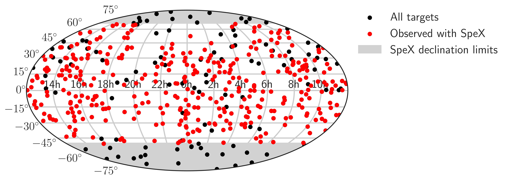

25pc Sample of M7-L5 Dwarfs
My research focuses on the study of brown dwarfs, their atmospheres and near-infrared spectra, and their multiplicity properties to understand how they form.
Rhoncus Semper
Magna Nullam
Natoque Vitae
Dolor Penatibus